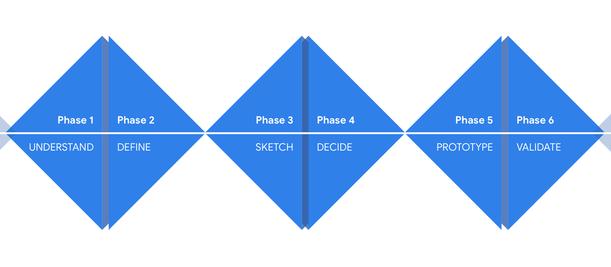

Mini design spirit
To reach the best solution possible, I initiated and lead a mini-design spirit with internal stakeholders. Google’s Design Sprint Kit was my main source.

I designed this feature for Carla Car Rental, an international car rental app that works as a middleman connecting users and suppliers.
The NPS of rental businesses is so low that some suppliers hit negatives.
Therefore, many issues occur on the counter while picking up the car, and the customers keep Carla accounted for.
We planned to refund the amount they paid, minus the Peace of Mind cost if the customer said they couldn’t pick up their rental. This would make the user feel protected, encouraging them to proceed to checkout and also causing them to have a flawless rental experience.
My job was to design the feature seamlessly to match the whole idea of calmness & safety to achieve peak satisfaction.
Part 1
To reach the best solution possible, I initiated and lead a mini-design spirit with internal stakeholders. Google’s Design Sprint Kit was my main source.
This method maps out UX step by step enabling the team to emphasize with the user and highlight pain points. Collectively, we started from the point of the user’s introduction to the feature. Worked towards to user’s desired goals, and highlighted pain points, and opportunities.

To get the UX writing right, generate new ideas, and find the optimal elements, I created a mind map. Some branches such as structured
, immediate
assist
, and uninterrupted
were especially helpful.
I started with the sketches on paper and then moved on to Sketch & Adobe UX to create prototypes.
Part 2
After creating a fully functional prototype, I exported it to a mobile device and conducted usability testing with internal stakeholders.
Also, I was curious about if the ‘included’ area should be collapsed on default or not. Thus, I asked our developers to implement A/B testing on release to measure the conversion rate and Peace of Mind purchasing rate.
Part 3
I used a structed list view with corresponding icons to increase persuasiveness and purchase rate.
To match the overall app, I used Carla’s design guidelines. This feature was designed for both Android and iOS. Overall, I intended to design the screens as informative and as persuasive as possible. I used both UX copywriting techniques and entries with icons that explain the process in detail.
Since we are selling this feature during the check-out process, it should not distract the flow. Considering that, I made one of the most crucial pages a bottom sheet. Bottom sheets are easy to dismiss and interact with

Peace of Mind was a successful feature. The same UX/UI is still being used in the app due to its effective persuasiveness.